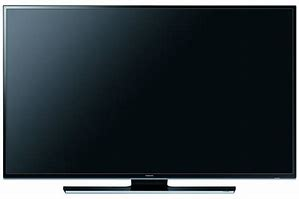
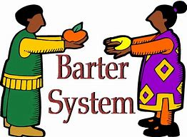

Here are five more great innovations that changed human history completely in my opinion. If you do not feel the need to go through these five innovations, then feel free to skip to the summary
Television! It's probably something that you have already experienced before. Do you know what it is and it's origin? The television is a small box with enormous amounts of information that changed entertainment and communications forever. The invention of the television was the work of many individuals, and therfore cannot be credited to a single person. TV plays an important part of our everyday lives. It rapidly developed during the 19th and the 20th century. The first television camera was invented by two men without knowing that they both were working on the same invention, as ironically, there was no TV at that time. They thought they were each goign to be famous for their ideas, not knowing that they both had the exact same idea. These two men were known as; Vladimir Zworykin and Philo Taylor. In 1884, a man known as Paul Gottlieb Nipkow created and patented the first television which he called the electromechanical television system. Though Color TV was not a new idea since it was thought about by many individuals. However, in 1925 Zworykin was the first that filed a patent for an electronic color television system. Over time, television gained political importance as every country started to share their political agenda through it. Politicians saw the Tv as a way of self promotion, making it even more popular. TV also suddenly became a way of preserving peace and order between political parties, organizations and countries.
A giant step forward in the field of medicine, antibiotics saved millions of lives by killing and preventing the growth of harmful bacteria. Scientists like Louis Pasteur and Joseph Lister were the first to recognize and attempt to combat bacteria, but it was Alexander Fleming who made the first leap in antibiotics when he accidentally discovered the bacteria-inhibiting mold known as penicillin in 1928. Antibiotics proved to be a major improvement on antiseptics—which ironically killed human cells along with bacteria—and their use spread rapidly throughout the 20th century. Nowhere was their effect more apparent than on the battlefield. While nearly 20 percent of soldiers who contracted bacterial pneumonia died in World War I, with antibiotics, mainly Penicillin—that number dropped to only 1 percent during World War II. Antibiotics including penicillin, vancomycin, cephalosporin and streptomycin have gone on to fight nearly every known form of infection, including influenza, malaria, meningitis, tuberculosis etc.

From the beggining of dawn man has tried to make things convenient for himself. Due to this habit, people were starting to become lazy, and always wanted others to do their work for them free. Eventually society got tired of such people, and the bartering system was born. The bartering system was a system, where in order to get something, you would have to trade something in return. Its basically like saying an apple for a tomato. This system was the solution to the laziness problem society used to face in history. Due to this system, lazy people were forced to work because if they didn't do so, they wouldn't get what they wanted in return. The bartering system still exists to this day, just in different forms. For example, today if you wanted to make money, you would have to trade your skills and labour in return. The more you work, the more money you make. People evolved from this system, and that is how business was created. People got the idea of making others work for them in return for money and then selling the fruit of their hard work to the society around them. This is how people started to make even more money. Nowadays, it is almost impossible to live without money, unless ofcourse you have the ability to self sustain!
After the computer was invented, scientist had thought of many ideas, including connecting all computers to each other. The first prototype of the internet was created in the year 1950, however, it was still not revolutionary, a goal which scientists wanted to achieve. In the mid 1990's their goal was achieved. Scientists had found the way to connect all computers and this revolutionized technology. After that, came the creation of the electronic mail, an idea no one had ever thought of before. With this came the ability to call and message at your will. Our technologies have developed so much now with the aid of the internet that we also have the ability to face time, a concept which revelutionized technology. In order to locate the ip adress of things such as the electronic mail, came the creation of the world wibe web, also known as "WWW." Tim Burnese is the father of the world wide web, a concept which is now used to share information.

Throughout much of human history, money mostly took the form of precious metals, such as gold, silver, iron, etc. It even took the form of coins, made by the government or the absolute monarchy system, and even raw materials like livestock or vegetables and fruits. The inception of paper money and currency ushered in a bold new era. A world in which currency could purchase goods and services despite having no intrinsic value. Paper currency was widely used in China in the ninth century, however it did not appear in Europe until the late 1600s. It was a very important matter spurred on by frequent shortages of coins, which finally made banks issue paper notes as a promise against future payments of precious metals and as well as to be used as currency. By the late 19th century many nations had begun issuing government-backed legal tender that could no longer be converted into gold or silver. The switch to paper money not only bailed out struggling governments during times of crisis; like it did for the United States during the Civil War, but it also ushered in a new era of international monetary regulation that changed the face of global economics. Perhaps even more importantly, paper currency was the vital first step in a new monetary system that led to the birth of credit, debit and visa cards for things such as electronic banking.

Humans have evolved over the years, and there are everyday examples to prove that fact. Here were some examples of the innovations that I think can easily prove that humans have evolved over the years. We are becoming smarter as well as better in everything generation after generation. As we go along, there will be many more things to come for the future. What do you think the future will bring? Want to know some possible ides that I think may come true in the future? Go check out the next page!
In conclusion, we have covered ten topics today. They are the top ten innovations that changed human history in my opinion. These are the steam engine, the rail way, the airplane, the light bulb, transistors, the television, medecine, the trade system, the internet, and finally to conclude, paper currency. In my opinion, from all these inovations, the innovation of the light bulb was the greatest innovation in my opinion, as without it, we would not have a reliable source of the one thing that we need most, light. Things that we cannot see are something that I think can harm us as we do not know what we are dealing with. What do you think is the greatest innovation made throught human history?